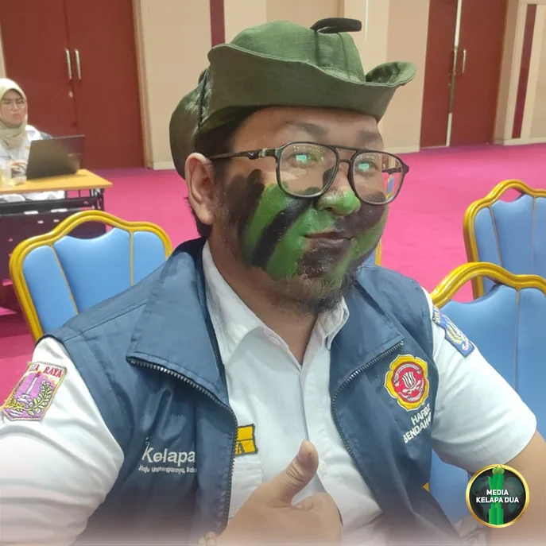

Berita Utama

RW 08 Kelapa Dua Wakili Jakarta Barat dalam Mini Konvensi Kampung Bebas Jentik Tingkat Provinsi DKI Jakarta
Tanggal, 11 November 2026
MediaKada | Mini Konvensi Kampung Bebas Jentik (KBJ) Tingkat Provinsi DKI Jakarta dilaksanakan di Ruang Auditorium Lantai 8 Gedung Pusat Krisis dan Kegawatdaruratan Kesehatan Daerah (PK3D), Jalan Kesehatan Nomor 10, Jakarta Pusat, Rabu (11/11) pagi.
Kegiatan yang diselenggarakan oleh Dinas Kesehatan Provinsi DKI Jakarta tersebut merupakan salah satu tahapan penting dalam proses penilaian Lomba Kampung Bebas Jentik (KBJ) Tahun 2026. Mengusung tema "Satu Rumah, Satu Jumantik, Jakarta Bebas Jentik", mini konvensi menjadi ajang pemaparan program kerja, inovasi, serta hasil verifikasi lapangan dari perwakilan RW terbaik yang mewakili enam wilayah kota administrasi dan Kabupaten Kepulauan Seribu.
Selain sebagai sarana kompetisi, kegiatan ini bertujuan meningkatkan kesadaran masyarakat akan pentingnya Perilaku Hidup Bersih dan Sehat (PHBS) melalui Gerakan Pemberantasan Sarang Nyamuk (PSN) 3M Plus. Upaya tersebut diharapkan mampu mempertahankan Angka Bebas Jentik (ABJ) di atas 95% guna mendukung terciptanya Jakarta yang bebas dari penyebaran Demam Berdarah Dengue (DBD).
Tim penilai terdiri dari Aan Aryanti, SKM, M.Kes (Dinas Kesehatan DKI Jakarta), Syvia Defiyanti (Pokja IV PKK DKI Jakarta), Dr. drh. Sugiarto, M.Si, Dr. Agus Handito, SKM, M.Epid (Kementerian Kesehatan RI), serta Torrodatu Allo Somba, SKM, M.Kes.
Pada kesempatan tersebut, RW 08 Kelurahan Kelapa Dua, Kecamatan Kebon Jeruk dipercaya mewakili Kota Administrasi Jakarta Barat dalam ajang Lomba Kampung Bebas Jentik Tingkat Provinsi DKI Jakarta. RW 08 berhasil menjadi yang terbaik setelah melalui proses seleksi dari delapan kecamatan se-Jakarta Barat.
Dukungan penuh diberikan oleh Lurah Kelapa Dua, Elfin Ridho Putra, kepada Ketua RW 08 beserta para kader Jumantik yang mengikuti penilaian. Kehadiran langsung lurah dalam kegiatan mini konvensi menjadi bentuk apresiasi sekaligus motivasi kepada para kader yang selama ini aktif menjaga lingkungan agar tetap bebas dari jentik nyamuk penyebab DBD.
Elfin Ridho Putra menyampaikan bahwa keberhasilan menjaga kesehatan lingkungan sangat bergantung pada peran aktif kader Jumantik yang secara rutin melakukan pemantauan serta edukasi kepada masyarakat.
"Kader Jumantik merupakan garda terdepan dalam menjaga kesehatan lingkungan. Saya berharap seluruh kader RW 08 dapat menampilkan yang terbaik dan menunjukkan komitmen serta kekompakan yang telah dibangun selama ini," ujar Elfin Ridho Putra.
Turut mendampingi perwakilan RW 08 Kelurahan Kelapa Dua dalam kegiatan tersebut antara lain perwakilan Suku Dinas Kesehatan Jakarta Barat, Lurah Kelapa Dua, elfin Ridho Putra, Kasi Kesejahteraan Rakyat Kelurahan Kelapa Dua Bangun Wiryawan, Ketua LMK RW 08 Kelapa Dua Syarip Hidayattullah, Ketua RW 08 Bisri Ali, Kepala Pustu Kelapa Dua drg. Cindy Setyaningsih beserta staf, Tim Puskesmas Kecamatan Kebon Jeruk, Tim Penggerak PKK Kelurahan Kelapa Dua, serta Ketua PKK RW 08.
Sementara itu, hasil penilaian Lomba Kampung Bebas Jentik (KBJ) Tingkat Provinsi DKI Jakarta Tahun 2026 akan diumumkan pada rangkaian peringatan Hari Kesehatan Nasional (HKN) Provinsi DKI Jakarta yang dijadwalkan berlangsung pada 13-14 November 2026 di Blok M Hub, Jakarta Selatan.
Keikutsertaan RW 08 Kelurahan Kelapa Dua di tingkat provinsi diharapkan dapat menjadi inspirasi bagi wilayah lain dalam meningkatkan partisipasi masyarakat untuk menjaga kebersihan lingkungan dan mencegah penyebaran penyakit berbasis lingkungan melalui gerakan Kampung Bebas Jentik.